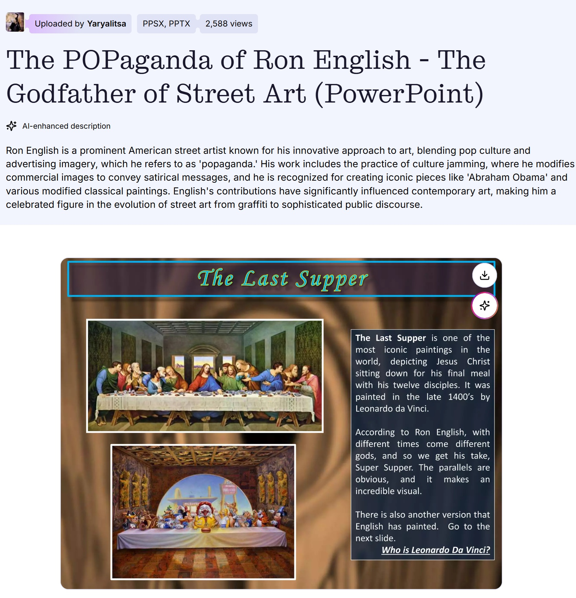

Provenance
Private collection.
Exhibitions
Status Factory, Opera Gallery, New York, New York, US, September 12–October 29, 2010.
Status Factory – The Art of Ron English, Frank M. Doyle Arts Pavilion (Orange Coast College), Costa Mesa, California, US, November 12–December 17, 2010.
Status Factory – The Art of Ron English, Frank M. Doyle Arts Pavilion (Orange Coast College), Costa Mesa, California, US, November 12–December 17, 2010.
Literature
Ron English, Fauxlosophy: The Art of Ron English (San Francisco: Last Gasp, 2016), p. 90. ISBN 978-0867196566.

Ron English, Original Grin: The Art of Ron English (Paris: Cernunnos, 2019), p. 257. ISBN 978-2374950938.

Ron English, Status Factory: The Art of Ron English (San Francisco: Last Gasp of San Francisco, 2014), p. 75. ISBN 978-0867197891.

Andrew Handley, “10 Pop Culture Versions Of Famous Paintings,” Listverse, March 2, 2013. Online.
By Priscilla Frank, “HuffPost Arts Interviews Ron English”, Huffpost, 1960.

Edd Norval, “Ron English - Always on-Brand”, Compulsive Contents, vol. 53, no. 9, 2018.


Archival document, for “Ron English: Do estúdio para a rua”, CAIXA Cultural, October 21 – December 21, 2014.

Juggernut3, “Preview: Ron English – “Status Factory” @ Opera Gallery”, Arrested Motion, 2010, p. 9.

Federico Fahsbender, “Ron English remix”, Remix, 2011, p. 72.

Highsnobiety TV video still. Still frame from Highsnobiety TV’s Ron English Talks Status Factory, showing Super Supper at 1:54. Video source available here, accessed April 11, 2026.

Блинцов, “Ron English поп-арт, клоунада и стёб”, Art Assorty, January 23, 2013.

“POPaganda, art and crimes!”, Chicquero, December 6, 2011.
, Kainowska, August 1, 2011.

“The Real America: Welcome to Hell, Kiss Kids!! ___The artwork of Ron English”, Kainowska, August 1, 2011. Online article.
Notes
The work is documented in exhibition photography from Status Factory at Opera Gallery and Status Factory – The Art of Ron English at the Frank M. Doyle Arts Pavilion.
The composition was also reproduced as a related print, documented in a secondary marketplace listing.
Ancillary Documentation



Selected Online Circulation
Selected examples of the work’s online circulation, reproduction, or discussion. This list is not exhaustive; it is intended to document representative appearances of the image beyond formal exhibition and publication records.